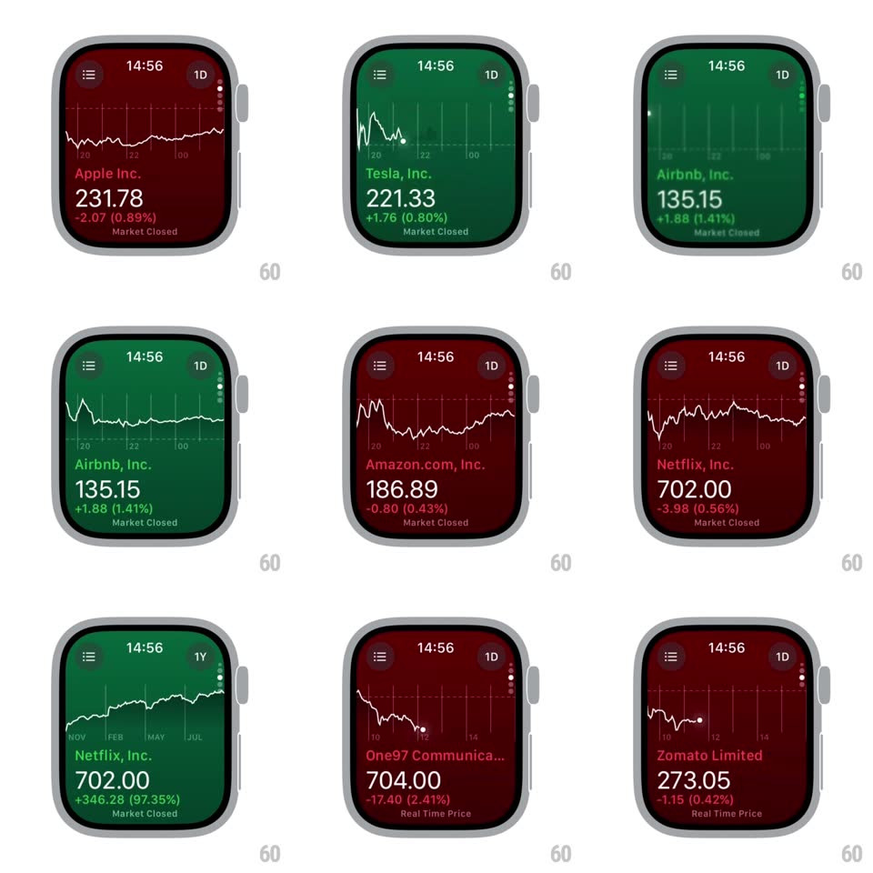

Media
Frame-by-frame

Rebuild this interaction 1:1: Apple Stocks on watchOS - each stock page floods its entire background green or red based on daily performance, the price line draws itself across the chart when the page arrives, and paging between stocks morphs both the background color and the chart path fluidly.

Rebuild this interaction 1:1: Apple Stocks on watchOS - each stock page floods its entire background green or red based on daily performance, the price line draws itself across the chart when the page arrives, and paging between stocks morphs both the background color and the chart path fluidly. ## Integration Integration: stack-agnostic spec - springs given as stiffness/damping, timed motions as duration + curve; map every value to your framework and animation library of choice. ## Scene watchOS Stocks: menu icon and interval chip (1D/1M) top, company name, large price, signed change line, "Market Closed"/"Real Time Price" note, and a white line chart with a bright end dot over the tinted background. ## Motion spec Pattern: performance-tinted page with drawing chart. - Page entry: background tweens to the stock's performance color (green up, red down, 300ms) as the chart line strokes itself left to right (~800ms, ease-out), the end dot landing with a small pulse (scale 1 -> 1.4 -> 1, 200ms). - Paging (crown/swipe): the next page slides in; its background color crossfades from the previous stock's tint mid-gesture (continuous, tied to page offset); the new chart draws on arrival. - Interval chip (1D -> 1M): the chart path morphs to the new series (~500ms, ease-in-out) and the axis labels crossfade. - Text block (name, price, change) crossfades per stock (200ms), change line colored to match. ## Calibration - The tint covers the whole screen behind all content - it is the page background, not a chart backdrop. - Up/down color is semantic per stock per interval - the same stock flips color when the interval changes the sign. ## Reduced motion Background and chart crossfade (200ms); no path drawing. ## Don't miss - The chart line is always white - contrast against both green and red tints. - The end dot marks the latest price and sits exactly on the line's terminus.